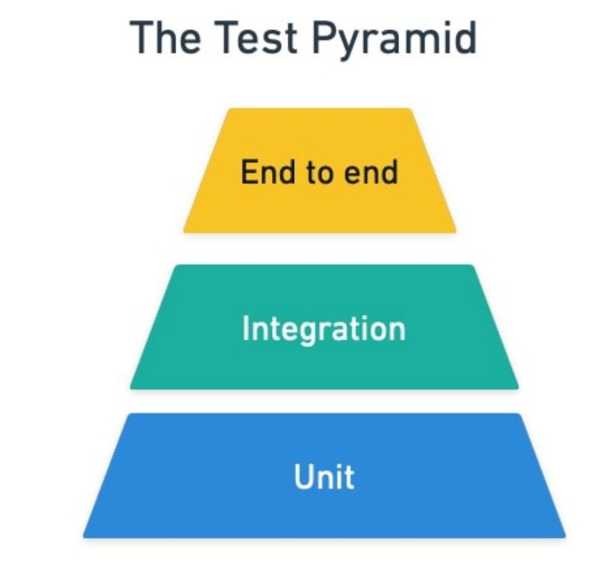

When Amazon Prime Video announced they’d moved their video monitoring and analytics services back to a monolithic architecture to reduce latency and operational complexity, it sent shockwaves through the tech industry. This was particularly striking coming from Amazon — one of the original champions of microservices whose “two-pizza team” philosophy and service-oriented architecture helped define the pattern. When Segment followed suit, and then Istio simplified its own architecture by merging services, it became clear: the pendulum was swinging back.
But this isn’t a story about microservices failing — it’s about an industry learning the hard way that architectural decisions should be driven by real needs, not trends. After a decade of adoption, we’ve moved beyond the hype cycle to understand when microservices make sense, when they don’t, and what comes next.
The journey from monoliths to microservices promised independent deployment, better scaling, and team autonomy. For many organizations, it delivered on these promises. For others, it created distributed monoliths — systems with all the complexity of microservices but none of the benefits. Today’s most successful teams build adaptive architectures that can evolve between these patterns as their needs change.
Below we explore the full microservices journey: their core principles and benefits, the communication patterns that make them work, strategies for decomposing monoliths, the technology stack that enables them, testing approaches for distributed systems, and the modern architectural patterns emerging from a decade of real-world experience.
The Anatomy of Microservices
At its core, a microservice is a small, autonomous service that does one thing well. But what makes a service truly “micro”? It’s not about lines of code — size is determined by complexity and responsibility, not line count. The key characteristics that define a well-designed microservice include:
Business Capability Focus: Each service should align with a specific business capability or domain. A user authentication service handles authentication, a payment service processes payments, and an inventory service manages stock levels. This isn’t just technical organization — it’s business organization in code.
Data Ownership: Perhaps the most critical principle is that each microservice owns its data completely. This means having its own database, data model, and being the single source of truth for that domain. No other service should directly acc
ess another service’s database — all interactions must happen through well-defined APIs.
Independent Deployment: Teams should be able to deploy services independently without coordinating with other teams. This autonomy is what enables the rapid iteration that microservices promise.
Technology Agnostic: Different services can use different programming languages, frameworks, and databases. Your recommendation engine might be written in Python with TensorFlow, while your payment service uses Java with Spring Boot.
The Benefits That Matter
The advantages of microservices become apparent at scale. Independent scaling allows you to allocate resources where they’re needed most — scale your video processing service during peak hours while keeping your user profile service at baseline capacity. Team autonomy enables organizations to move faster by reducing coordination overhead and allowing teams to choose their own technology stacks and deployment schedules.
Fault isolation means that when one service fails, it doesn’t necessarily bring down the entire system. Your recommendation engine might be struggling, but users can still browse, search, and make purchases.
The Challenges Are Real
However, microservices introduce complexity that many teams underestimate. Distributed system complexity means dealing with network latency, partial failures, and eventual consistency. Operational overhead multiplies — instead of monitoring one application, you’re now monitoring dozens or hundreds of services, each with its own logs, metrics, and deployment pipeline.
Network overhead compounds quickly. What seems like simple functionality — playing a video, loading a user profile, or processing a payment — suddenly requires orchestrating multiple service calls. Each hop adds latency, and debugging failures becomes an exercise in distributed systems archaeology. Teams often discover that the operational complexity of managing dozens of independent services dwarfs the complexity of the original monolith.
Service proliferation creates its own problems. As teams embrace the “do one thing well” philosophy, they often end up with services so granular that simple business operations require complex choreography. The cognitive overhead of tracking dependencies, understanding data flows, and coordinating deployments across a sprawling service landscape can paralyze development velocity.
Data consistency becomes a distributed systems problem. When a customer places an order, you might need to update inventory, process payment, and send notifications across multiple services — all while handling potential failures gracefully.
Common Antipatterns to Avoid
Shared Databases: The moment two services share a database, you’ve lost the independence that makes microservices valuable. Changes to the database schema now require coordination between teams, and you’ve coupled your services at the data layer.
Distributed Monoliths: Services that are so tightly coupled they must be deployed together defeat the purpose entirely. If changing one service requires changes to five others, you have a distributed monolith — all the complexity of microservices with none of the benefits.
Premature Decomposition: Starting with microservices from day one often leads to wrong service boundaries. It’s usually better to start with a well-structured monolith and extract services as domain boundaries become clear and teams grow.
Communication: The Nervous System of Microservices
In a monolith, method calls are cheap and reliable. In microservices, communication becomes a first-class design concern that can make or break your system’s reliability and performance. The way services communicate shapes everything from your system’s latency characteristics to its failure modes.
Synchronous Communication: REST and Beyond
HTTP/REST APIs remain the most common communication pattern. They’re simple, widely understood, and tooling is excellent. When a user requests their order history, your API gateway can synchronously call the orders service, which might then call the user service to enrich the response with user details.
But REST isn’t your only option for synchronous communication. gRPC has gained significant traction, especially for internal service-to-service communication. With Protocol Buffers providing type safety and efficient serialization, gRPC offers better performance and stronger contracts than JSON over HTTP. Companies like Netflix and Uber have built entire microservice communication layers on gRPC.
GraphQL presents an interesting middle ground, allowing clients to request exactly the data they need while abstracting away the complexity of multiple service calls. Your mobile app doesn’t need to know whether user profiles and order history come from different services.
The challenge with synchronous communication is coupling and cascading failures. When Service A calls Service B, which calls Service C, you’ve created a chain of dependencies. If Service C is slow, it affects the entire chain. If it’s down, the whole operation fails.
Asynchronous Communication: Embracing Eventually Consistent Reality
Message queues and event streams decouple services in time. Instead of “Please process this payment and wait for me,” you say “A payment was requested” and move on. This fundamentally changes your system’s resilience characteristics.
Popular tools like Apache Kafka, RabbitMQ, and cloud-managed services like AWS SQS/SNS provide the infrastructure for reliable message delivery. The key insight is that many business processes don’t actually require immediate consistency — they require eventual consistency with excellent user experience.
Event-Driven Architecture: Services as Reactive Systems
Event-driven architecture (EDA) treats services as reactive systems that respond to events rather than direct commands. When a user completes a purchase, instead of the order service directly calling the inventory service, payment service, and notification service, it publishes an “OrderCompleted” event.
This approach offers several advantages: loose coupling between services, scalability (services can process events at their own pace), and auditability (events provide a natural audit log of what happened in your system).
However, EDA introduces challenges around message ordering, duplicate processing, and event schema evolution. When you publish an “OrderCompleted” event, you need to ensure all interested services can process it, even as the event structure evolves over time.
CQRS and Event Sourcing: Rethinking Data Flow
When microservices embrace event-driven architectures, traditional CRUD operations often become a bottleneck. CQRS (Command Query Responsibility Segregation) and Event Sourcing emerge as natural patterns that complement both microservices autonomy and event-driven communication.
CQRS separates read and write operations, often using different data models for each. In a microservices context, this might mean having separate services for handling commands (writes) and queries (reads). This separation allows read services to optimize for complex queries and reporting without impacting the performance of write operations.
Event Sourcing takes this further by storing events as the source of truth rather than current state. Instead of storing “John’s account balance is $500,” you store “John deposited $1000, then withdrew $500.” The current balance is derived by replaying events.
These patterns synergize powerfully with microservices and event-driven architectures. Event sourcing naturally produces the events that drive inter-service communication, while CQRS enables services to maintain their own optimized views of data from other services. A single business transaction might generate events consumed by multiple services, each building their own read models optimized for their specific needs. This eliminates the need for complex joins across service boundaries while maintaining data consistency through eventual consistency patterns.
Handling Distributed Transactions with Sagas
In a monolithic application, you can use database transactions to ensure consistency. In microservices, data is spread across multiple databases owned by different services. This is where Saga patterns come in.
A saga is a sequence of local transactions where each service publishes events or sends commands to trigger the next step. If any step fails, compensating transactions undo the work of completed steps.
Consider an e-commerce order process:
- Order service reserves inventory
- Payment service charges the customer
- Shipping service schedules delivery
If payment fails, the saga triggers compensation: the order service releases the inventory reservation, and the shipping service cancels the delivery.
Choreography-based sagas use events — each service listens for events and decides what to do next. Orchestration-based sagas use a central coordinator that manages the transaction flow. Each approach has trade-offs in complexity, coupling, and failure handling.
The key insight is that distributed transactions in microservices aren’t about achieving ACID properties across services — they’re about achieving business consistency through carefully designed compensation flows.
Decomposition: The Art and Science of Service Boundaries
Perhaps no decision in microservices architecture is more crucial — or more fraught — than determining service boundaries. Get it right, and you unlock the full potential of independent teams moving at high velocity. Get it wrong, and you end up with a distributed big ball of mud that’s harder to manage than the monolith you started with.
Domain-Driven Design: Your North Star
Domain-Driven Design (DDD) provides the most reliable framework for microservice decomposition. DDD’s concept of bounded contexts maps naturally to microservice boundaries. A bounded context is an area of the business where certain terms, rules, and models apply consistently.
In an e-commerce system, the “Customer” entity means different things in different contexts. In the Sales context, a customer has purchase history, preferences, and loyalty status. In the Support context, a customer has tickets, issue history, and satisfaction ratings. In the Billing context, a customer has payment methods, invoices, and credit limits.
Each bounded context should become its own microservice with its own data model. The “Customer” entity can be represented differently in each service, optimized for that service’s specific needs.
Identifying Service Boundaries
Start with business capabilities, not technical components. Instead of having “Database Service” and “UI Service,” think “Order Management Service” and “Inventory Service.” Ask yourself: “What business capabilities does our system provide?” Each capability is a potential service boundary.
Look for data ownership patterns. Services should own their data end-to-end. If you find yourself saying “The order service needs to read from the user database,” you’ve identified a potential boundary problem. Either the user service should provide an API for that data, or that data belongs in the order service.
Consider team structures. Conway’s Law isn’t just descriptive — it’s prescriptive. If you have separate teams for user management and order processing, these are natural service boundaries. Trying to fight Conway’s Law usually results in organizational friction and system complexity.
Identify transaction boundaries. Operations that need to be strongly consistent should generally live in the same service. If you frequently need distributed transactions between services, consider whether those services should actually be one service.
The Strangler Fig Pattern: Evolving from Monoliths
Most organizations don’t start with microservices — they evolve to them. The Strangler Fig pattern (named after the vine that gradually encompasses and eventually replaces its host tree) provides a systematic approach to this evolution.
Instead of attempting a big-bang rewrite, you gradually extract functionality from the monolith:
- Identify a bounded context within the monolith that could be extracted
- Build the new microservice alongside the monolith
- Route new functionality to the microservice while keeping existing functionality in the monolith
- Gradually migrate existing functionality from the monolith to the microservice
- Remove the replaced functionality from the monolith
This pattern reduces risk and allows for learning and adjustment as you go. You might start with a read-only service (like search or recommendations) before tackling more complex transactional services.
Branch by Abstraction: Managing the Transition
Branch by Abstraction helps manage the technical aspects of extraction. Instead of directly calling monolith code, you introduce an abstraction layer that can route to either the monolith or the new service. This allows for gradual migration and easy rollback if issues arise.
// Before
orderService.processOrder(order)// During migration - abstraction layer
orderProcessor.processOrder(order) // Routes to monolith or microservice// After
orderMicroservice.processOrder(order)Database Decomposition Strategies
One of the biggest challenges in microservice extraction is dealing with shared databases. Several patterns can help:
Database per Service: The ideal end state where each service has its own database. This might require denormalizing data and accepting eventual consistency between services.
Shared Database Anti-Pattern: Multiple services sharing the same database. While sometimes necessary during transitions, this couples services at the data layer and should be temporary.
Database Views: Create views that present data in the format expected by each service while maintaining a shared underlying schema. This can be a useful intermediate step.
Event Sourcing for Decomposition: Use events to sync data between services during decomposition. The monolith publishes events about data changes, and new services can build their own data models by consuming these events.
The Technology Stack That Makes Microservices Possible
Microservices became practical only when supporting technologies matured. The convergence of containers, orchestration, cloud computing, and observability tools transformed distributed systems from academic curiosities into production reality.
Container Orchestration and Service Mesh
Kubernetes emerged as the foundation for microservices deployment, handling service discovery, load balancing, health checks, and rolling deployments. Its declarative model means you describe desired state and Kubernetes maintains it — restarting failed services, scaling under load, rescheduling workloads.
Service meshes like Istio, Linkerd, and Consul Connect add service-to-service communication patterns — retries, circuit breaking, observability — at the infrastructure level rather than in application code.
Cloud and Infrastructure Automation
Managed cloud services democratized microservices adoption. AWS, Google Cloud, and Azure provide managed Kubernetes, databases, message queues, and serverless computing that eliminate operational overhead.
Infrastructure as Code tools like Terraform and GitOps platforms like ArgoCD ensure consistent, reproducible deployments across environments. Manual infrastructure management becomes impossible at microservices scale.
Observability and Deployment
Distributed tracing (Jaeger, Zipkin) and metrics collection (Prometheus, Grafana) provide visibility into system behavior across service boundaries. The “three pillars” — metrics, logs, traces — become essential for debugging distributed failures.
Independent CI/CD pipelines enable each service to build, test, and deploy independently. Progressive delivery techniques like canary releases and feature flags reduce deployment risk.
Testing: Rethinking Quality Assurance in Distributed Systems
Testing microservices presents fundamentally different challenges than testing monolithic applications. The distributed nature introduces network boundaries, service dependencies, and failure modes that don’t exist in single-process applications. Understanding how to test effectively becomes critical for maintaining confidence in system reliability.
The Test Pyramid in Practice

The classic test pyramid — unit tests at the base, integration tests in the middle, and end-to-end tests at the top — remains relevant but requires adaptation for microservices. Unit tests stay largely unchanged, testing individual functions and classes in isolation with the same fast feedback loops you’d expect.
Service tests become more important in microservices architecture. These tests verify a single microservice’s behavior by running the service in isolation with external dependencies stubbed out. They provide confidence that your service works correctly without the complexity and brittleness of testing multiple services together.
End-to-end tests that span multiple services become increasingly problematic as your system grows. With multiple services, teams, and deployment pipelines, these tests become slow, flaky, and difficult to maintain. More critically, they create coordination bottlenecks that undermine the independent deployability that makes microservices valuable.
Consumer-Driven Contracts: A Better Alternative
Consumer-driven contracts (CDCs) offer a compelling alternative to broad end-to-end tests. Instead of testing the entire system together, consumer teams write tests that express their expectations of how a producer service should behave. These contract tests run against the producer service in isolation, catching breaking changes without the overhead of full system tests.
Tools like Pact enable teams to generate these contracts programmatically and share them between teams. When a producer service changes, the contract tests immediately reveal which consumers would be affected, enabling teams to have focused conversations about API evolution rather than discovering breaks in production.
CDCs work particularly well because they align with team boundaries — the same organizational structure that shapes your microservices architecture. They make explicit the communication that should already exist between teams.
Testing in Production: Embracing Reality
Perhaps the most significant shift in microservices testing is embracing testing in production. The complexity of distributed systems means you cannot catch all potential failures in preproduction environments. Production testing becomes not just beneficial but necessary.
Synthetic monitoring runs automated tests against production systems continuously, using fake transactions to verify core user journeys work correctly. Canary deployments become a form of testing where new versions are gradually rolled out to subsets of users. Feature flags enable teams to test new functionality in production with controlled exposure.
This shift reflects a broader philosophy change: optimizing for mean time to recovery (MTTR) rather than just mean time between failures (MTBF). Instead of trying to prevent all failures, successful teams build systems that fail gracefully and recover quickly.
The Great Reconsideration: Microservices in 2025 and Beyond
The conversation around microservices has matured significantly since the early days of evangelical adoption. We’re now in an era of pragmatic reflection, where organizations are honestly evaluating what worked, what didn’t, and what comes next.
The Pendulum Swings Back
The most telling stories come from companies that helped define microservices in the first place. When Prime Video’s engineering team decided to consolidate several services back into a monolith for their monitoring system, it wasn’t a failure — it was engineering maturity. They kept microservices where they made sense and consolidated where performance mattered more than independence.
Segment famously rewrote their event processing pipeline from microservices back to a monolith, dramatically simplifying their architecture. Even Istio, a tool specifically designed to make microservices manageable, consolidated multiple control plane services to reduce operational complexity.
These moves represent a fundamental shift in thinking. Early microservices adoption was often driven by technology enthusiasm rather than business requirements. The second wave is characterized by pragmatic engineering: use the right tool for the job, even if that means choosing boring solutions over exciting ones.
The Real Lessons Learned
Premature Distribution: Many teams discovered they were solving problems they didn’t have. A startup with five engineers doesn’t benefit from the organizational advantages of microservices — they just get the operational complexity without the payoff.
Underestimating Operational Overhead: Each microservice introduces deployment pipelines, monitoring, logging, and operational complexity. Teams found themselves spending more time managing infrastructure than building features.
Wrong Service Boundaries: Without deep domain knowledge, teams often created service boundaries that cut across business operations, resulting in chatty, interdependent services that were harder to manage than the original monolith.
Modern Patterns: Beyond Binary Thinking
The industry has moved beyond the false dichotomy of “monolith vs. microservices” toward more nuanced approaches:
Modular Monoliths: The Best of Both Worlds
Modular monoliths organize code into distinct modules with clear boundaries but deploy as a single unit. You get the organizational benefits of clear domain separation without the operational complexity of distributed systems. Tools like Spring Modulith provide frameworks for building modular monoliths with enforced module boundaries and integration testing support.
Companies like Shopify and GitHub have successfully used this pattern, structuring their applications as collections of well-defined modules that could theoretically be extracted as microservices if needed. The Majestic Monolith — a software architecture philosophy championing well-architected monolithic applications argues showcases how well-structured monoliths can scale to significant size while remaining maintainable. The key insight is that many of the benefits attributed to microservices — clear boundaries, team ownership, independent development — can be achieved within a monolithic deployment model.
Macroservices: Bigger Services, Fewer Problems
Macroservices represent yet another compromise — services that are larger than traditional microservices but smaller than monoliths. Instead of having separate services for user authentication, user profiles, and user preferences, you might have a single “User Service” that handles all user-related functionality.
This approach reduces the number of network calls, simplifies transactions, and decreases operational overhead while still providing service boundaries aligned with team ownership.
Architectural Pragmatism: Beyond Binary Choices
The most sophisticated teams have moved beyond the monolith-versus-microservices debate entirely. They’re building systems that optimize for business outcomes rather than architectural purity. Some parts of their system might be tightly integrated monoliths where performance is critical. Other parts might be loosely coupled microservices where team independence matters more than milliseconds.
This isn’t compromise — it’s engineering wisdom. Different parts of your system have different requirements, different constraints, and different trade-offs. A payment processing core might need the tight integration and predictable performance of a monolith, while a recommendation system benefits from the experimental agility of microservices.
The Serverless Alternative
Serverless computing and Function-as-a-Service (FaaS) platforms provide many of the benefits of microservices — independent deployment, automatic scaling, pay-per-use pricing — without the operational overhead of managing containers and orchestration platforms.
For certain types of workloads, especially event-driven and infrequently accessed services, serverless can provide the granularity and independence of microservices with much lower operational complexity.
Event Streaming as Architecture
Event streaming platforms like Kafka are enabling new architectural patterns that combine benefits of both monoliths and microservices. Instead of direct service-to-service communication, systems publish events to streams that other services can consume.
This event-driven architecture allows for loose coupling between services while maintaining data consistency through event sourcing and CQRS patterns. Services can be independently developed and deployed but share state through well-defined event schemas.
Micro-Frontends: Extending Microservices to the UI
The microservices philosophy has naturally extended to frontend architectures with micro-frontends — breaking down monolithic frontend applications into smaller, independently deployable pieces that can be owned by the same teams that own the backend services.
Tools like Module Federation in Webpack, Single-SPA, and Bit enable teams to build and deploy frontend components independently while composing them into cohesive user experiences. This approach allows frontend teams to move at the same pace as their backend counterparts, choosing their own frameworks, libraries, and deployment schedules.
However, micro-frontends introduce their own complexity around consistency, shared state management, and user experience coherence. The most successful implementations focus on clear boundaries and strong design systems rather than technology for its own sake.
Application Runtimes: Simplifying Distributed Systems
Dapr (Distributed Application Runtime) — a portable, event-driven runtime that makes it easier for developers to build resilient, microservice stateless and stateful applications — represents a new category of tools that provide building blocks for distributed applications. Rather than having each service implement patterns like service discovery, state management, and pub/sub messaging, Dapr provides these as sidecar services that any application can use regardless of programming language.
This approach democratizes distributed systems patterns, making it easier for teams to build resilient microservices without deep expertise in distributed systems. Similar runtimes are emerging across the ecosystem, abstracting away the complexity of distributed systems infrastructure.
The Future: Adaptive Architectures
The trend is toward adaptive architectures that can evolve as organizations grow. Start with a well-structured monolith, extract services when team boundaries become clear, and continue evolving the architecture as needs change.
Tools and patterns are emerging to support this evolution — better monolith decomposition tools, standardized service interfaces, and platforms that can host both monolithic and microservice components.
The key insight is that architecture isn’t a one-time decision — it’s an ongoing evolution that should match your organization’s current needs while preparing for future requirements. The companies succeeding with microservices today are those that adopted them intentionally, with clear understanding of the trade-offs and investment in the necessary supporting infrastructure.
Conclusion: Building Systems That Scale with Your Organization
After a decade of microservices evolution, the key insight is simple: architecture should serve your organization, not the other way around. The most successful teams build adaptive systems that can evolve between monoliths and microservices as needs change.
The future belongs to pragmatic engineering — using monoliths where simplicity matters, microservices where independence is crucial, and hybrid approaches that optimize for business outcomes rather than architectural purity.
The question isn’t whether to choose microservices or monoliths — it’s how to build systems that serve your users, empower your teams, and grow with your ambitions.